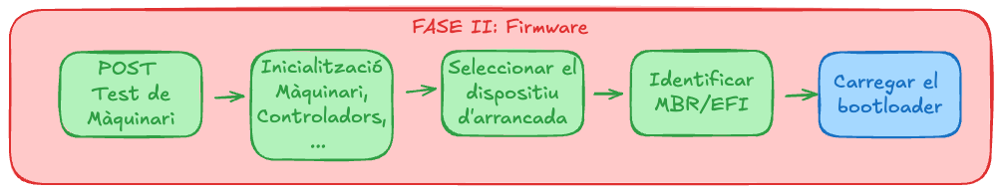
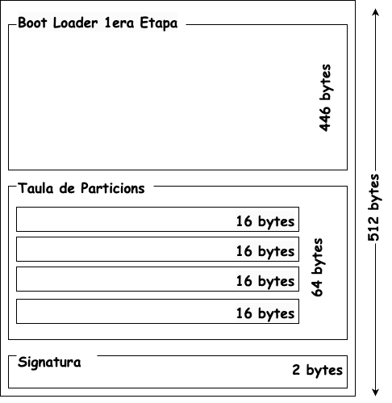
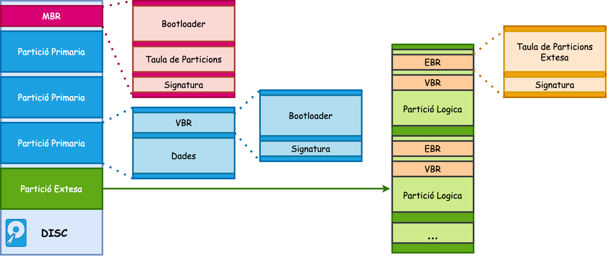
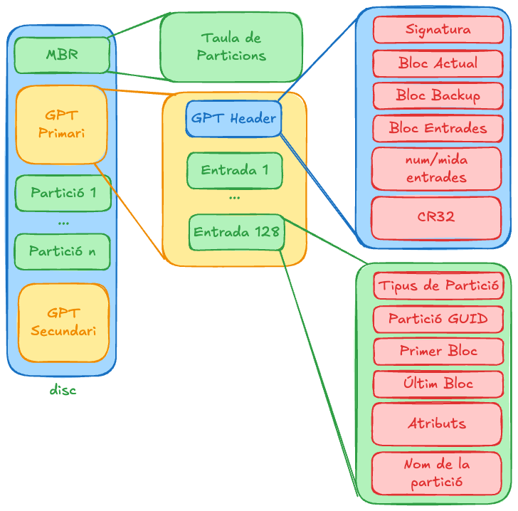
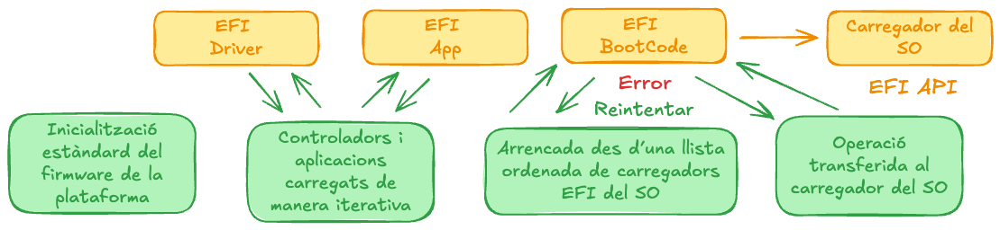

Arrencada del sistema (Part 1)
Unitat 2 · Administració i Manteniment de Sistemes i Aplicacions (AMSA)
Etapes de l’arrancada

Fase 1: Màquinaria
- En prémer el botó d’encesa, la placa base envia un senyal a la PSU (Power Supply Unit).
- La PSU proporciona tensió estable a tots els components i activa la CPU.
- La CPU inicialitza registres interns i col·loca el Puntador d’Instrucció (EIP) a la direcció de reset
0xFFFFFFF0.
Aquesta adreça conté una instrucció de salt (jmp) que redirigeix la CPU al Firmware (BIOS/UEFI) per iniciar el procés de diagnòstic i arrencada del sistema (POST).
Fase 2: Firmware
El teu ordinador necessita un firmware per: provar, detectar, configurar i inicialitzar dispositius. Aquest firmware en sistemes moderns és l’UEFI i en sistemes antics el BIOS (normalment compatibles amb IBM PC).
You’ve probably read a lot of stuff on the internet about UEFI. Here is something important you should understand: 95% of it was probably garbage. — Adam Williamson
Fase 2: Etapes
Inicialització del firmware
- Carrega i execució del codi de firmware (BIOS/UEFI).
- Lectura de la configuració de la NVRAM.
- Verificació de la integritat del firmware.
Diagnòstic i detecció
- Power-On Self Test (POST): comprovació de CPU, RAM, gràfics bàsics…
- Detecció i inicialització dels dispositius connectats.
- Aplicació de la configuració als dispositius.
Arrencada del sistema
- Selecció del dispositiu d’arrencada.
- Càrrega del bootloader de primera etapa.
- Transferència del control al bootloader.
Actualització del firmware
El firmware està emmagatzemat en un xip de memòria flash a la placa base. L’actualització (flashing) substitueix el contingut d’aquest xip per una versió nova.
🚀 Objectius
- Corregir errades de microcodi de la CPU.
- Afegir suport per a nou maquinari (CPU, RAM, targetes).
- Aplicar parches de seguretat (ex.: vulnerabilitats Spectre/Meltdown.
- Millorar funcions de gestió d’energia i arrencada segura (Secure Boot).
⚠️ Riscos
- Un error en el procés (tall de corrent, imatge corrupta, versió incorrecta) pot deixar el xip inservible (brick).
- Alguns fabricants ofereixen mecanismes de recuperació (dual BIOS, BIOS flashback, càpsules UEFI).
- En entorns de producció, és recomanable validar la nova versió en un entorn de test abans de desplegar-la.
Diferències entre BIOS i UEFI (I)
| Característica | BIOS | UEFI |
|---|---|---|
| Emmagatzematge | Tradicionalment en ROM (avui dia flash EEPROM) | Flash SPI a la placa base + EFI System Partition (ESP) al disc |
| Capacitat de disc | Fins a 2,2 TB (per limitació 32-bit LBA, sectors 512 B) | Fins a 9,4 ZB (GPT) |
| Interfície | Text | Gràfica, amb suport per ratolí i resolucions altes |
| Seguretat | Sense proteccions avançades | Secure Boot, verificació de signatures i protecció contra codi maliciós |
| Compatibilitat | Principalment IBM PC compatibles antics | Compatible amb sistemes moderns, amb suport per Legacy BIOS via CSM |
Diferències entre BIOS i UEFI (II)
| Característica | BIOS | UEFI |
|---|---|---|
| Velocitat d’arrencada | Més lenta | Més ràpida gràcies a inicialització paral·lela de drivers i fast boot |
| Taula de particions | MBR | GPT |
| Nombre màxim de particions | 4 primàries (amb lògiques dins d’estesa) | Fins a 128 entrades de particions |
| Modularitat | Monolítica | Modular, permet afegir drivers, aplicacions i extensions UEFI |
Taula de particions MBR
Estructura
- Bootloader de primera etapa (446 bytes): Conté el codi d’arrencada.
- Taula de particions (64 bytes): Conté la informació de les particions. Pot contenir fins a 4 entrades.
- Signatura (2 bytes): Marca de final de la taula de particions. Permet identificar la taula de particions com a vàlida.
Límitació
- Com MBR utiltiza entrades de 32 bits per blocs lògics (LBA) → \(2^{32}\) sectors × \(512 B = 2 TB\) aproximadament.
- Només suporta 4 particions primàries.

Particions MBR (I)
Particions primàries
- Fins a 4 per disc.
- Contenen directament un sistema de fitxers (ext4, NTFS, FAT32).
- Pot tenir un Volume Boot Record (VBR) que carrega el sistema operatiu de la partició.
Partició estesa
- Una partició primària especial per superar la limitació de 4 primàries.
- No conté sistema de fitxers ni VBR; actua com a contenidor de particions lògiques.
Particions lògiques
- Resideixen dins de la partició estesa.
- Cada partició lògica té un Extended Boot Record (EBR) amb la seva taula de particions.
- La linked list d’EBRs permet afegir dinàmicament més particions lògiques.
- Pot contenir un VBR per carregar el sistema operatiu
Particions MBR (II)
Taula de particions GPT (I)
- Compatibilitat i protecció
- Bloqueja utilitats basades en MBR per no sobreescriure un disc GPT.
- Conté una única partició especial que identifica el disc com GPT.
- OS i eines que no suporten GPT reconeixen el disc, però normalment no el modifiquen.
- GPT Header Primari
- Situat al segon sector del disc (LBA 1).
- Defineix els blocs utilitzables del disc.
- Conté la taula de particions (mínim 128 entrades, 128 B cadascuna).
- GPT Header Secundari
- Còpia de seguretat del Primary GPT Header.
- Situat als últims sectors del disc.
- Permet recuperar la informació si el Primary Header està corrupte.
Taula de particions GPT

Què és UEFI? (I)
- Sistema de fitxers propi
- UEFI no utilitza MBR tradicional de 512 B ni codi de boot limitat.
- Disposa d’un filesystem propi (FAT32, 100 a 550 MB) anomenat EFI System Partition (ESP).
- La partició EFI és marcada amb boot flag, però mai conté OS partitions.
- Estructura de la partició EFI
- Cada OS té la seva carpeta dins de la ESP.
- Conté tots els fitxers necessaris per carregar el sistema operatiu.
- En Linux, la ESP sovint es munta sota
/boot/efi.
Què és UEFI? (II)
- Mini sistema operatiu
- UEFI és com un mini sistema operatiu.
- Executa fitxers en format EFI executable.
- Permet drivers i aplicacions independents del SO.
- Quan escrius un bootloader natiu UEFI, has de respectar aquest format.
- UEFI és com un mini sistema operatiu.
- UEFI Boot Manager
- Motor de política del firmware per arrencada.
- Configurable via variables globals a NVRAM.
- Carrega drivers UEFI i aplicacions UEFI (incloent OS bootloaders) en l’ordre definit per les variables.
- Linux disposa de l’eina
efibootmgrper modificar la configuració del boot manager.
Mòduls de la UEFI
efibootmgr
# efibootmgr -v
BootCurrent: 0002
Timeout: 3 seconds
BootOrder: 0003,0002,0000,0004
Boot0000* CD/DVD Drive BIOS(3,0,00)
Boot0001* Hard Drive HD(2,0,00)
Boot0002* Fedora HD(1,800,61800,6d98f360-cb3e-4727-8fed-5ce0c040365d)File(\EFI\fedora\grubx64.efi)
Boot0003* opensuse HD(1,800,61800,6d98f360-cb3e-4727-8fed-5ce0c040365d)File(\EFI\opensuse\grubx64.efi)
Boot0004* Hard Drive BIOS(2,0,00)P0: ST1500DM003-9YN16G - Les entrades Boot0000 i Boot0004 corresponen a modes de compatibilitat BIOS (CSM), no són natives- d’UEFI.
- Generades automàticament pel firmware, sense intervenció externa.
- S’afegeixen directament a les variables NVRAM del sistema.
- Entrades UEFI natives (Boot0002, Boot0003) apunten directament als fitxers EFI dels OS:
- Fedora :
\EFI\fedora\grubx64.efi - openSUSE:
\EFI\opensuse\grubx64.efi
- Fedora :
- L’ordre d’arrencada es defineix a la variable
BootOrder.
Què és la consola de la UEFI?
La consola de la UEFI és una interfície de línia de comandes que permet interactuar directament amb el firmware UEFI per realitzar tasques avançades de diagnòstic, configuració i manteniment del sistema.
Funcions
- Configuració del maquinari i perifèrics (CPU, memòria, dispositius PCIe).
- Comprovació del funcionament dels dispositius i diagnòstic de fallades.
- Accés als sistemes de fitxers EFI i gestió de fitxers de boot.
- Instal·lació, reparació o actualització de bootloaders i OS.
- Execució de aplicacions UEFI natives (mini-aplicacions tipus OS).
Accés
- Prement una tecla durant l’engegada del sistema, segons el fabricant: F2, F10, F12, ESC o Supr.
- Des de sistemes operatius:
- Linux:
efibootmgrosystemctl reboot --firmware-setup. - Windows: Opció Advanced Startup i UEFI Firmware Settings.
- macOS: Reboot amb Option/Alt.
- Linux:
Comandes de la consola de la UEFI
| Comanda | Funció | Exemple |
|---|---|---|
| map | Mostra els dispositius detectats i les unitats lògiques associades | map fs* → llista tots els sistemes de fitxers detectats |
| mem | Mostra l’ús de memòria i mapa físic de la RAM | memmap → mapa detallat de la memòria física |
| ls | Llista fitxers i directoris dins un FS accessible | ls fs0:\EFI\Boot → mostra fitxers de la partició EFI |
| cd | Navegar entre carpetes dins del FS | cd EFI\Boot → mou a la carpeta d’arrencada EFI |
| cp | Copiar fitxers entre unitats o directoris | cp fs0:\EFI\Boot\bootx64.efi fs1:\EFI\Backup\ |
| edit | Editar fitxers, útil per configurar scripts d’arrencada | edit fs0:\EFI\Boot\bootx64.efi |
Importància de la partició EFI
- Punt de partida per a l’arrencada del sistema operatiu.
- Essencial per a l’arrencada dels sistemes UEFI.
- Conté fitxers crítics per carregar el bootloader de segona etapa, com:
- GRUB (Linux)
- Gestor d’arrencada de Windows
- Permet tenir múltiples sistemes operatius en el mateix disc.
- Facilita la gestió i actualització de bootloaders sense afectar les particions del sistema operatiu.
Arrencar sense partició EFI
- Teòricament possible: configurar UEFI per carregar el bootloader directament des del disc dur.
- Poc comú i no recomanat, ja que:
- Complica la gestió dels sistemes operatius.
- Impedeix actualitzacions i reparacions automàtiques dels bootloaders.
- La partició EFI proporciona un punt centralitzat i estàndard per a tots els fitxers d’arrencada.
Tipus de bootloaders
- Bootloader de primera etapa: Carregat directament pel firmware (BIOS/UEFI). S’encarrega de carregar el bootloader de segona etapa.
- Bootloader de segona etapa: Carregat pel bootloader de primera etapa. S’encarrega de carregar el sistema operatiu.
En sistemes UEFI, el bootloader de primera etapa és un fitxer executable en format EFI (per exemple, grubx64.efi per a GRUB). Mentre que en sistemes BIOS, el bootloader de primera etapa es troba en el MBR del disc.
Funcions del bootloader
Un bootloader és el programa encarregat de:
- Mostrar un menú amb les diverses opcions d’arrencada disponibles.
- Carregar el nucli (kernel) i l’Initrd (si s’escau) a la memòria principal.
- El kernel de linux té una convenció d’arrencada on el bootloader ha de preparar el mapa de memòria i els registres de la CPU abans de transferir el control al nucli.
Diferents gestors d’arrencada
| Bootloader | Compatibilitat | Característiques principals |
|---|---|---|
| LILO | BIOS | Antic bootloader Linux, obsolet. |
| GRUB | BIOS/UEFI | Popular en Linux; menú configurable; suport multiboot. |
| GRUB2 | BIOS/UEFI | Versió moderna; suport FAT, NTFS, ext4; millor multiboot i scripting. |
| rEFInd | UEFI | Permet arrencar múltiples OS; interfície gràfica amigable. |
| systemd-boot | UEFI | Simple i ràpid; integració amb systemd; no recomanat per multiboot. |
| Windows Boot Manager | UEFI | Gestiona arrencada de Windows i altres OS compatibles; integració amb BCD. |
Exercicis Propostas
That’s all
Take Home Message
El procés d’arrencada és un procés complex. Els administradors de sistemes han de conèixer aquest procés per poder gestionar i solucionar problemes durant l’arrencada del sistema i garantir un sistema segur, estable i eficient.


Unitat 2 · Administració i Manteniment de Sistemes i Aplicacions (AMSA) 🏠